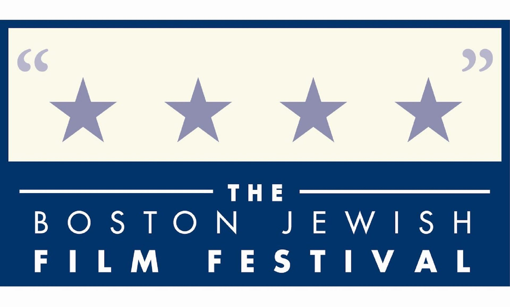
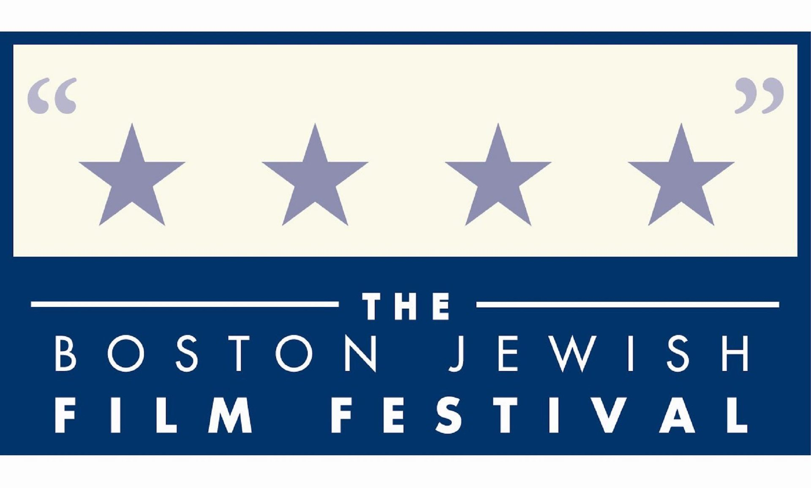

Ty Burr
Boston, MA
Ty Burr is a film critic and columnist for The Boston Globe and author of the critically acclaimed books Gods Like Us: On Movie Stardom and Modern Fame and The Best Old Movies for Families. He has been at The Globe since 2002; before that, he worked for Entertainment Weekly and at HBO. In addition, he is an adjunct professor in the Film & TV department at Boston University and a Professor of the Practice in the Experimental College at Tufts University. He is a member of the National Society of Film Critics and the Boston Society of Film Critics.
Archives

Evan Crean
Somerville, MA
Evan Crean is a contributing writer and editor for NewEnglandFilm.com. He is also co-author of the lighthearted self-help book Your ’80s Movie Guide to Better Living and co-host of the weekly film podcast Spoilerpiece Theatre. Additionally, Evan is the marketing director for Boston Reel, a site dedicated to Boston’s independent film culture. Previously, he contributed hundreds of movie reviews and celebrity interviews to Starpulse.com. You can follow him on his site Reel Recon or find him on Twitter as @reelrecon.

Allyson Johnson
Newburyport, MA
Ally Johnson is the Film Editor for The Young Folks, a site focused on bolstering and highlighting an array of diverse and fresh talent in criticism. Her writing can also currently be found at Cambridge Day, The Playlist and Seacoast Online, where she covers film, television, theater, and local events.

Inkoo Kang
San Francisco, CA
Inkoo Kang is the Chief TV Critic for MTV News and a regular reviewer for The Village Voice and Screen Junkies. Previously, she was the News Editor/Managing Editor for IndieWire - Women and Hollywood, a film critic for TheWrap, and a Contributing Editor at BoxOffice. Her essays on film have been published in The Atlantic,

Tom Meek
Cambridge, MA
Tom Meek is the President of the Boston Society of Film Critics. He is a longtime contributor at The Boston Phoenix, Cambridge Day, the WBUR ARTery, and the Charleston City Paper. He has also appeared regularly on New England Cable News. His byline can also be found at E!-Online, Cineaste, Film Threat, and Web Del-Sol. Tom likes a harmonious universe and rides his bike everywhere. You can follow him on Twitter @TBMeek3.

Mike Sargent
New York, NY
Mike Sargent is a filmmaker with over 20 years of professional experience in film, television and radio. His debut feature film, Personals (a.k.a Hook'd Up) starred Malik Yoba, Stacey Dash, and comedian Jim Gaffigan, who made his debut in the film. A founding member of the Black Film Critics Circle (BFCC), Sargent is currently Chief Film Critic for WBAI Radio’s weekly daytime film review program, ReelWorld, and host of WBAI’s popular late night radio show, Niteshift. He was also the creator and host of Arise on Screen, Arise Networks’ weekly global movie review & interview show (2014-15) and was the first African-American hosted film review television show ever. Presently, Sargent is in production on Bad Boys: A Documentary, an investigative film that examines why women, and society in general, are in love with “bad boys” throughout history.

Gary Wolf
Brookline, MA
Gary Wolf is an award winning science fiction and fantasy writer. He created the concept of Toontown, bringing to life its beloved inhabitants: Roger Rabbit, Roger’s va-va-voom mate, Jessica Rabbit, Baby Herman, and hard-boiled private eye, Eddie Valiant. Wolf’s first Toontown novel, Who Censored Roger Rabbit? became a visual reality in Disney/Spielberg’s blockbuster film, Who Framed Roger Rabbit? The film won four Academy Awards and grossed $1 billion dollars. Walt Disney Pictures has purchased film rights to his second Toontown novel, Who P-p-p-plugged Roger Rabbit? He recently published a third Toontown novel, Who Wacked Roger Rabbit?
Archives
Gen Z Critics is proud to partner with:

 
